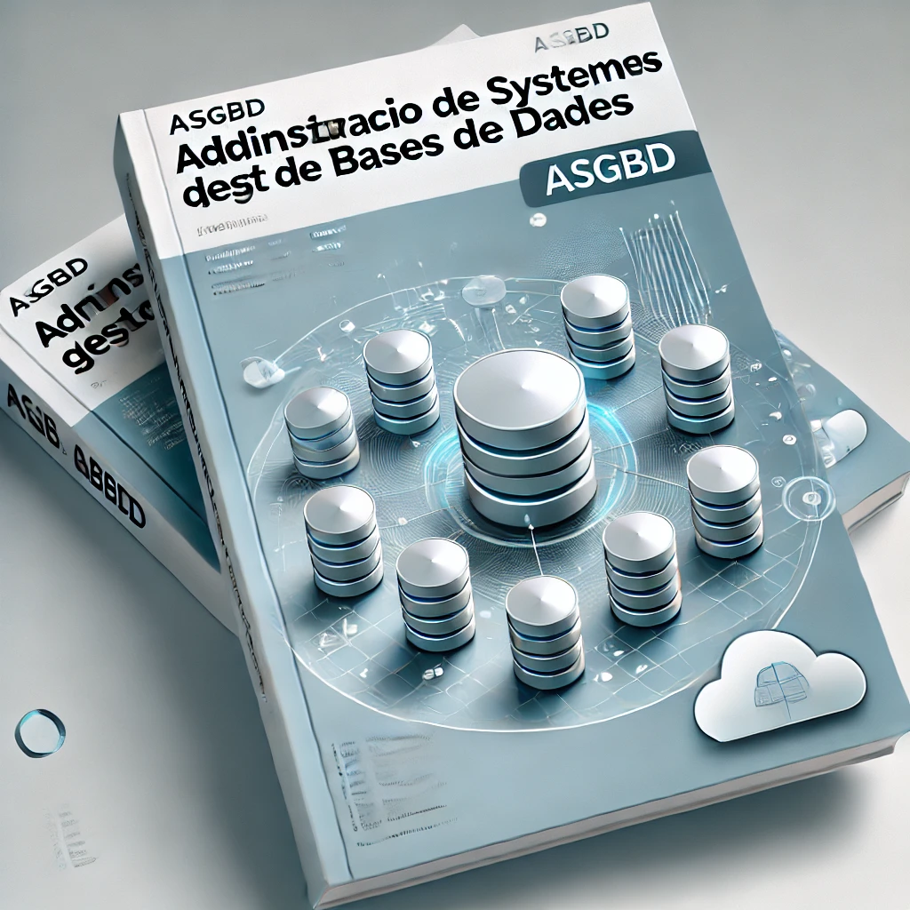

Presentació del mòdul ASGBD

El mòdul d'Administració de Sistemes Gestors de Bases de Dades (ASGBD) pertany al 2on curs del CFGS d'Administració de Sistemes Informàtics en Xarxa. Aquest mòdul està dissenyat per dotar els alumnes de les habilitats necessàries per a l'administració, configuració i manteniment de bases de dades, així com per garantir la seguretat i integritat de la informació.
Continguts del mòdul. Unitats didàctiques
-
UD 1. Instal·lació de MySQL Server (3 hores)
Aprendràs a instal·lar i configurar un servidor MySQL, crear bases de dades i gestionar taules, així com una introducció als procediments emmagatzemats. -
UD 2. MongoDB (3 hores)
Coneixeràs les bases de dades NoSQL amb MongoDB i la seva aplicació en la gestió d'informació no estructurada. També integrarem MongoDB en aplicacions web. -
UD 3. AWS i Bases de Dades en el Núvol (3 hores)
Introducció als serveis de bases de dades en el núvol amb AWS, configuració d'AWS RDS, DynamoDB i S3, i pràctiques amb aquests serveis.
-
UD 4. Administració del Servidor MySQL (9 hores)
Configuració avançada del servidor MySQL, gestió de variables del sistema, estadístiques, i la implementació de procediments emmagatzemats i funcions. -
UD 5. Usuaris, Permisos i Rols (9 hores)
Creació i gestió d'usuaris a MySQL, assignació de permisos i rols, i la implementació de mesures de seguretat per protegir les dades. -
UD 6. Còpies de Seguretat (9 hores)
Coneixeràs els diferents tipus de còpies de seguretat, estratègies efectives per fer còpies i la restauració de dades en MySQL.
-
UD 7. Rèpliques en Bases de Dades (9 hores)
Introducció a les rèpliques en bases de dades MySQL, configuració de servidors mestre-rèplica, i pràctiques de rèpliques i recuperació de dades. -
UD 8. Procediments Emmagatzemats (9 hores)
Creació i gestió de procediments emmagatzemats a MySQL, amb aplicacions pràctiques i implementació en casos reals.
Material Didàctic
- Apunts proporcionats pel professor.
- Textos d'ampliació i enllaços a articles i documentació oficial relacionats amb cada unitat.
- Pràctiques i exercicis resolts per reforçar el que s'ha exposat als apunts.
Tot aquest material s'oferirà a través de l'aula virtual durant el desenvolupament de cada unitat.
A més, dins l'aula virtual, disposarem d'un fòrum general per comentar aspectes globals del mòdul, i un fòrum per cada unitat didàctica, per tal deresoldre dubtes i tractar aspectes relacionats amb la unitat.
Programari
El programari a utilitzar serà principalment lliure, i es donaran instruccions en cada unitat per a la seua descàrrega i instal·lació:
- Kubuntu 24.04 com a sistema operatiu de base utilitzat a l'aula. No obstant això, l'alumne pot utilitzar qualsevol altre sistema operatiu, ja que tot el programari amb què treballarem és multiplataforma.
- MySQL Server, com a sistema gestor de bases de dades relacional.
- MongoDB, com a sistema gestor de bases de dades NoSQL.
- AWS, com a entorn per desplegar maquines virtuals i bases de dades en el núvol.
- Docker, com a contenidor d'aplicacions.
Eines web i col·laboratives
A banda del programari esmentat anteriorment, també s'utilitzaran el següent portals web i plataformes de treball col·laboratiu:
- Portals Aules: Com a aula virtual, i que articularà el funcionament del mòdul. Serà aci on s'ubiquen els diferents recursos, fòrums, etc.
- MS Teams:El nostre centre és Centre Digital Col·laboratiu, pel que cada alumne i professor disposa d'una identitat digital que li proporciona accés a tota la suite d'enies d'Office 365. Entre aquestes, la que utilitzarem de forma més freqüent serà MS Teams, a través de la qual s'organitzaran les diferents tutoríes .
- Github: En alguns projectes en grup, serà de gran ajuda treballar amb sistemes de control de versions distribuits, com Github o Gitlab, de manera que puguen realitzar desenvolupaments de forma col·laborativa.
Metodologia
Per a cada unitat disposareu de la teoría, projectes i exemples pràctics, i d'orientacions per tal de realitzar les activitats pràctiques que se us plantegen, així com enllaços a documentació addicional i complementària per a les activitats d'ampliació.
En línies generals, la manera de treballar en cada unitat serà la següent:
- En iniciar cada unitat didàtica es realitzarà una presentació inicial d'aquesta, dels conceptes bàsics, i de què seran capaços de fer en finalitzar-la.
- Disposareu del material per a la seua lectura comprensiva i estudi
-
També disposareu de documentació addicional per ampliar o puntualitzar allò exposat a classe.
-
Se us proporcionaran exercicis i pràctiques guiades que acompanyen la teoría de la unitat i que us ajudaran a entendre els conceptes de la unitat.
- També es realitzaran activitats i pràctiques de consolidació i reforç
- Aspectes a tindre en compte
- Tingueu en compte que l'aula virtual és el nostre espai principal d'interactuació i coordinació, de manera que:
- Utilitzeu els fòrums. Aquests poden ser un mecanisme molt profitós per resoldre dubtes, i crear un coneixement col·lectiu. Consulteu-los regularment, ja que és possible que algun dubte que us sorgisca, l'haja tingut prèviament algun company, i ja disposeu d'una solució o aclariment, bé per part del professor o d'algun company. De la mateixa manera, si teniu algun dubte general, o necessiteu algun aclariment susceptible de deixar alfòrum, no dubteu en fer-ho, ja que podeu ajudar també altres companys.
- Tingueu en compte que l'aula virtual és el nostre espai principal d'interactuació i coordinació, de manera que:
Avaluació
- Avaluació continuada: Consisteix al seguiment i realització de les Activitats Pràctiques d’Avaluació Continuada (APACs), que suposaran un 60% de la nota final, junt amb tests de cada unitat (10%) més la realització d’una prova de validació el dia de la convocatòria, amb un pes del 30%, i que versarà sobre les Activitats d’Avaluació Continuada realitzades. Per tal de poder obtenir la nota mitjana de l’avaluació, caldrà haver obtingut una qualificació d’un 5 en cadascuna de les parts.
Si no supereu la part d’Avaluació Continuada, caldrà realitzar l’examen de l’avaluació. La nota de l’avaluació continuada serà la mitjana ponderada de cada Activitat Pràctica d’Avaluació Continuada enfunció de les hores dedicades a cadascuna.